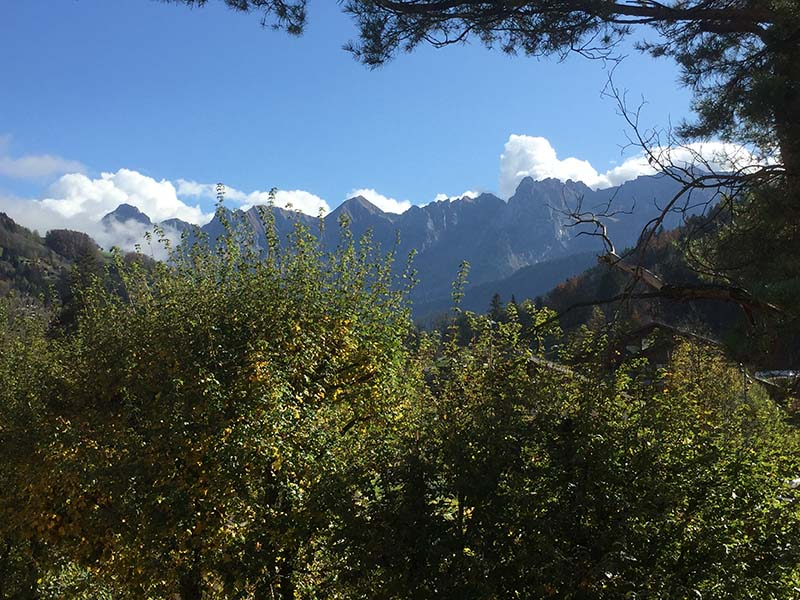

Dans un lieu éloigné de la ville au milieu des montagnes le Chalet « Les Campenottes » vous accueil en pleine Haute-Savoie. Profitez d’un environnement rustique et confortable tout en admirant la magnifique vue qu’offre les Alpes !

Vue sur la chaine de montagnes des Aravis
A l'abri dans nos châlets
A votre disposition, deux appartements au sein de notre chalet l’un pouvant accueillir 8 personnes et l’autre plus petit pouvant en accueillir 4.
Vue sur la chaine de montagnes des AravisVue sur la chaine de montagnes des Aravis
Les montagnes en hiver
Bien entendu notre chalet est ouvert en période d’hiver, prêt à héberger tout amateurs de sport de la saison.
Une région touristique
Vous pourrez découvrir les endroits touristiques comme le Hameau des Alpes et l’écomusée du bois et de la forêt mais aussi les randonnées, abondante dans cette région et pour tous les niveaux !
Une gastronomie propre à la région
N’hésitez pas à aller manger dans les nombreux restaurants présents dans la région. Vous y découvrirez la cuisine des montagnes.
Avant de partir
Avant de partir n’oubliez pas d’aller voir les fermes des environs pour ramener avec vous des produits locaux, que ce soit à la ferme ou même sur le marché du village.